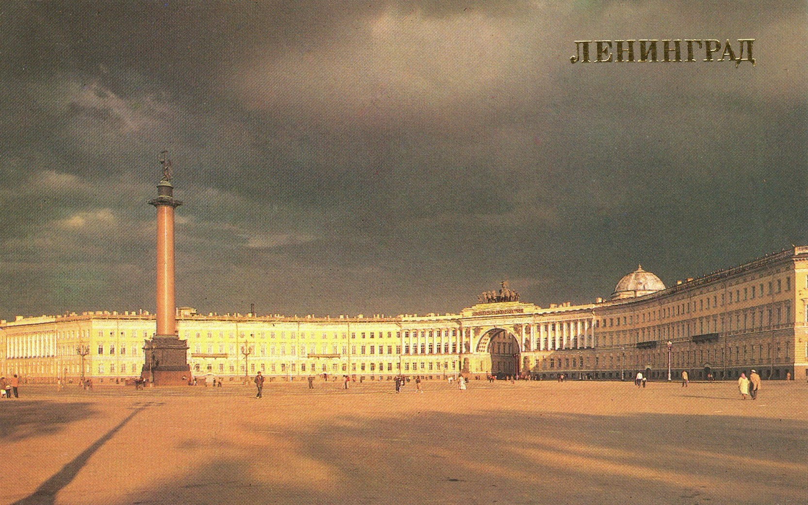
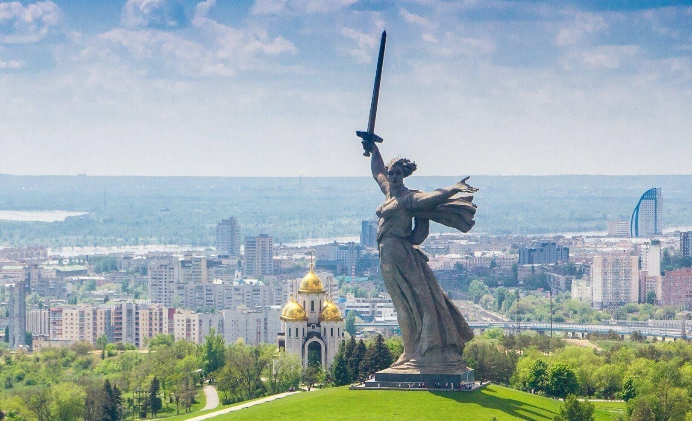

Москва

Москва — столица России, город-герой, где произошло одно из ключевых сражений Великой Отечественной войны — Битва за Москву. Защитники города героически отстояли его от немецко-фашистских войск.
Ленинград (Санкт-Петербург)
Ленинград выдержал 900-дневную блокаду, став символом мужества и стойкости. Жители города пережили голод, холод и постоянные бомбардировки, но не сдались.
Волгоград (Сталинград)
Сталинградская битва стала переломным моментом в Великой Отечественной войне. Город был практически полностью разрушен, но защитники одержали победу.
Киев
Киев — древняя столица Украины, город-герой, который пережил оккупацию и освобождение в ходе Великой Отечественной войны.
Минск

Минск, столица Беларуси, был удостоен звания города-героя за мужество и стойкость его жителей во время Великой Отечественной войны. Этот город стал символом сопротивления советского народа нацистской агрессии и сыграл важную роль в ходе войны.
Севастополь

Севастополь прославился своей героической обороной в годы Крымской войны и Великой Отечественной войны. Город был почти полностью разрушен, но его жители не сдались.